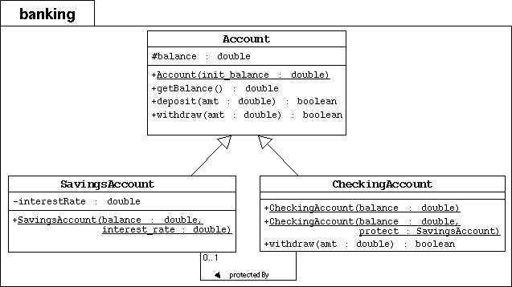
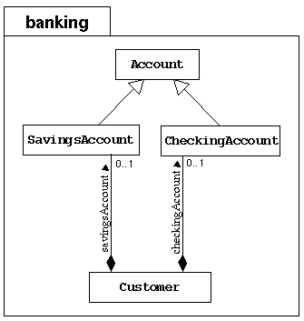

SL275: Module6: Inheritance
Alternate Exercise #1: Create Subclasses of Bank Accounts
(Level 3)
Objective
In this exercise you will create two subclasses of the Account class
in the banking project: SavingsAccount and CheckingAccount.
This is an alternate version of Exercise #1.
It incorporate a more complex model of the overdraft protection mechanism.
It uses the customer's savings account to perform the overdraft protection.
Directions
Start by changing your working directory to SL275/mod06/alternate1 on your computer.
Implementing the Account Subclasses

To the banking package, you will add the SavingsAccount
and CheckingAccount subclasses as modeled by the UML diagram above.
- Create the banking directory. Copy the previous Banking project
files (from SL275/mod05/exercise2) in this package directory.
- Implement the SavingsAccount class as modeled in the above
UML diagram.
- The SavingsAccount class must extend the Account class.
- It must include an interestRate attribute with type double.
- It must include a public constructor that takes two parameters:
balance and interest_rate. This constructor must
pass the balance parameter to the parent constructor by calling
super(balance).
- Implement the CheckingAccount class as modeled in the above
UML diagram.
- The CheckingAccount class must extend the Account class.
- It has no additional data attributes, but an association attribute,
called protectedBy must be included with the type SavingsAccount; the default value must be null.
- It must include one public constructor that takes one parameter:
balance. This constructor must
pass the balance parameter to the parent constructor by calling
super(balance).
- It must include another public constructor that takes two parameters:
balance and protect. This constructor must
pass the balance parameter to the parent constructor by calling
super(balance).
- The CheckingAccount class must override the withdraw
method. It must it perform the following check: if the current balance
is adequate to cover the amount to withdraw, then proceed as
usual. If not and if there is overdraft protection, then
attempt to cover the difference (balance - amount)
by the savings account. If the latter transaction fails, then the
whole transaction must fail with the checking balance unaffected.
Modifying Customer to Hold Two Accounts

Modify the Customer class to hold two bank accounts: one for
savings and one for checking; both are optional.
- Previously, the Customer class contained an association attribute
called account to hold an Account object. Rewrite this
class to contain two assocation attributes: savingsAccount and
checkingAccount with default values of null.
- Include two getter methods: getSavings and getChecking,
which returns the savings and checking accounts, respectively.
- Include two setter methods: setSavings and setChecking,
which set the savings and checking account associations, respectively.
Test the Code:
In the main exercise1 directory, compile and execute the
TestBanking program. The output should be:
Customer [Simms, Jane] has a checking balance of 200.0 and a savings balance of 500.0
Checking Acct [Simms, Jane] : withdraw 150.00 succeeds? true
Checking Acct [Simms, Jane] : deposit 22.50 succeeds? true
Checking Acct [Simms, Jane] : withdraw 147.62 succeeds? true
Customer [Simms, Jane] has a checking balance of 0.0 and a savings balance of 424.88
Customer [Bryant, Owen] has a checking balance of 200.0
Checking Acct [Bryant, Owen] : withdraw 100.00 succeeds? true
Checking Acct [Bryant, Owen] : deposit 25.00 succeeds? true
Checking Acct [Bryant, Owen] : withdraw 175.00 succeeds? false
Customer [Bryant, Owen] has a checking balance of 125.0
Notice that Jane's checking account is protected by her savings account
in the last transaction; whereas, Owen has no overdraft protection, so
the last transaction on his account fails and the balance is not affected.